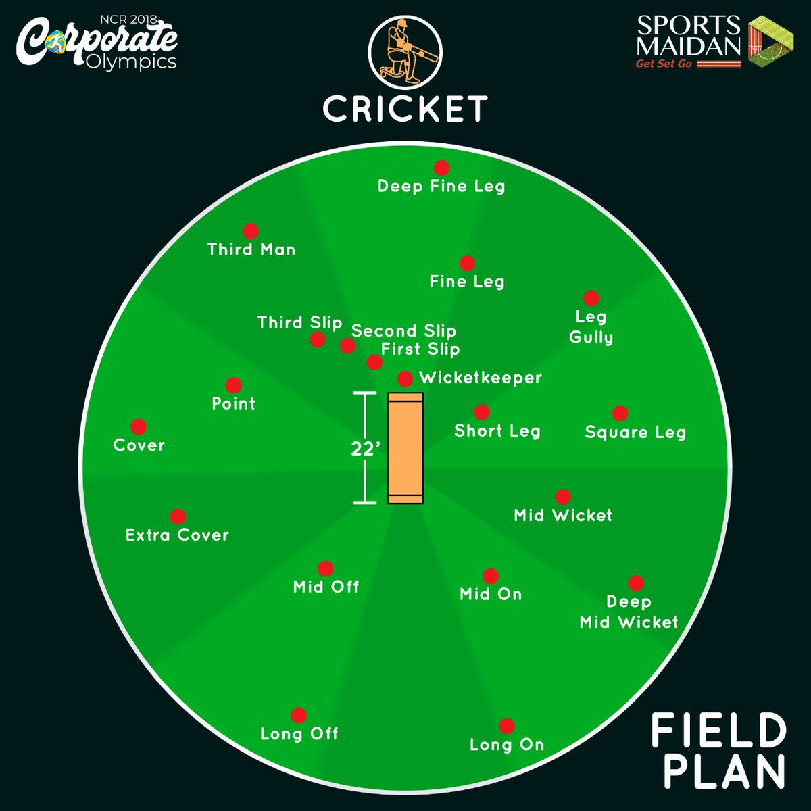

This page will contain information that I think is important to being able to field well. In Cricket, fielding is about getting the ball before it reaches the boundary. This includes things as simple as catching and pushing a ball away from the boundary to decrease its momentum.
One of the many proverbs of Cricket I have heard is "Catches win Matches". True enough, many matches have been decided by a single drop or catch (T20 World Cup Final 2024). Therefore, it is important that your fielding is as good as your batting and bowling. I would suggest practicing catching the most, as I see it as the most important part of fielding. For some practice, you could throw a ball as high as you can in the air and then try to to see if you can catch it. Obviously, be aware of the ground you are standing in, as a misstep can cause you to fall. This can teach you to be aware of your surroundings if you ever take a catch in a game.
- Use two hands whenever possible
- Never take your eyes off the ball, but be aware of your surroundings
- Guess where the ball is going to land and run towards it
- Take your time to make sure you are in the right place if and only if you anticipate that the ball is going to take a long time to go down
- Train your reflexes for quick catches when you are in the slip positions
- Practice catching with gloves if you are a wicket-keeper
- To practice slip and bowler catching, throw the ball at the ground so that it will bounce off a wall back to you; try to catch
- To practice outfield catching, throw the ball in to the air high and try to catch it as it falls back down
- To practice ball tracking, throw the ball high in the air and point at the place that you think it is going to fall in or just go catch it I guess
- Another slip catching practice is to make someone standing a few meters away from you throw a ball, and your job is to catch it
